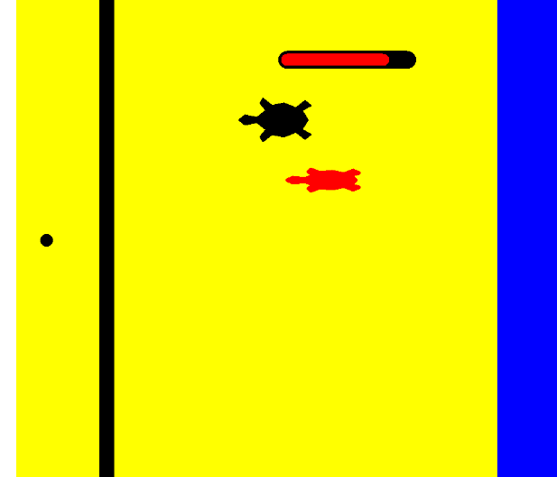
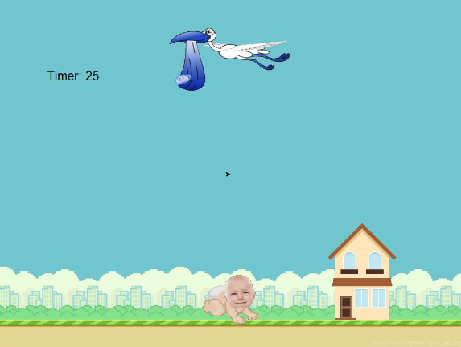
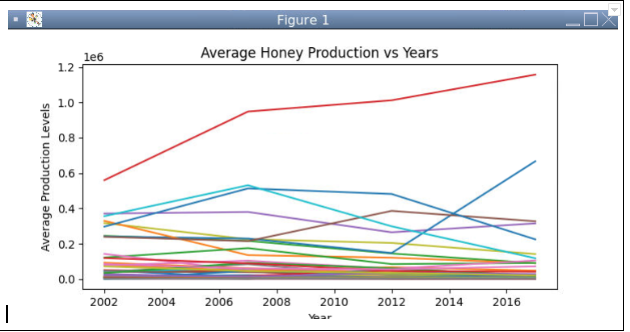
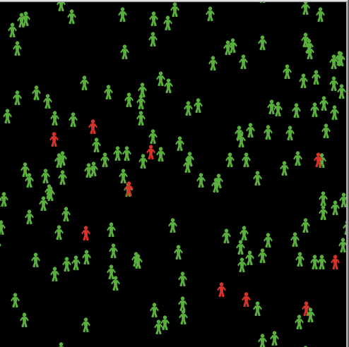
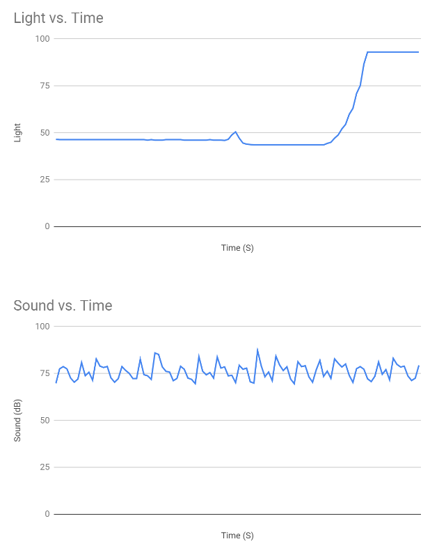
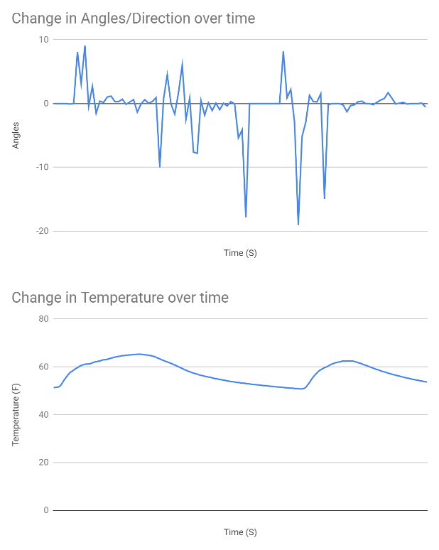

Portfolio
Home
Portfolio
About Me
This is my Portfolio Page!
Project#1 T-Day Invasion of turt.
The project was an interesting one because it took an entire week to develop. I really enjoyed working on it. The game is technicaly space invaders with a twist. You shoot turtle swith straws to kill them. The turtles scream when they die which is quite funny.


BABY DROPPING SIM!
The baby dropping sim was the most challenging project we have attempted so far the collision checkers would randomly fail to work but it was an over all pretty fun experience. sad baby says hi.


Karrovskis last stand
It was a fun game to make I worked heavily on the sprites and assets of the game. Im pretty happy on how it turned out but i wish we could have had more time to make it fully.
Use data files to create graphs.
This was a much more difficult project then I thought I felt that the data was difficult to use for the most part.I feel like this is stupid but I had a pretty hard time figuring it out and I don't know why


Using netlogo to Simulate a Virus
This project was interesting and dit ake some time. I learned a lot about how simulations and how we can reap data from them. I enjoyed gathering data on this simulation.


3.1.6 Rover Sensors Project
Managing the rover data was interesting and sort of difficult but the previous modules and assignments helped out a lot and i really could not have compleated this without them.We thankfully did not run into any problems with the data.


